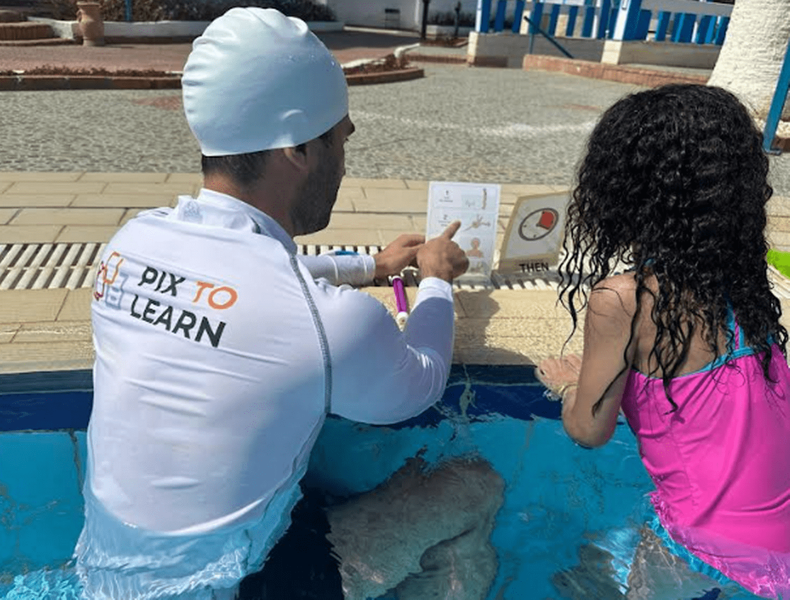

Essential steps only
Cut optional detail for later.
Module 2 of 4 | about 10-15 minutes
1. Open
Use this today: Write one 4-step skill sheet for a real task you teach.
2. See it
Watch a skill broken into essential steps only.

Placeholder: final clip not filmed yet. Photo reference below.
3. Get it
Cut optional detail for later.
Each card answers: what now?
Show the order first when you can.
4. Try it
Put the coat routine in order. Tap a card to move it up.
Tap a step to move it up until the order is right, then check.
5. Case it

A plan has 15 steps for a young learner. What should you do?
6. Take it
Tick at least two actions to make this module practical.
7. Check
Answer correctly to continue.
A strong beginner sequence usually has: